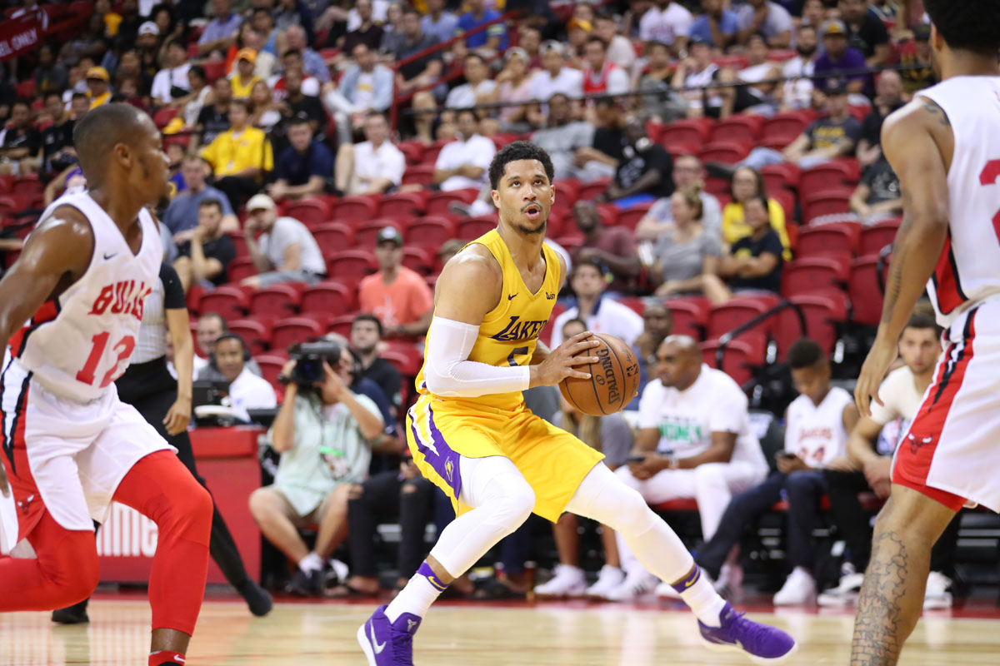

Los Angeles Lakers
37-45

69
Chicago Bulls
22-60

60
Stout Defense Leads Lakers to Second Straight Vegas Win
by Joey Ramirez
LAS VEGAS — The play of the night began with a rare miss from a deadeye shooter.
Svi Mykhailiuk’s transition 3-pointer bounced off the front of the rim. Launched with a hand in his face, the rookie knew he had to make amends for his shot selection.
“Oh man, I did a bad shot, so I had to get it back,” Mykhailiuk said.

He did just that, picking up Chandler Hutchison, Chicago’s 22nd-overall draft pick, 94 feet away from the basket and making him sweat just to get to half court.
When Hutchison did finally manage to get past Mykhailiuk, the 47th pick poked the ball out from behind and sprinted ahead for a fast-break slam, much to the approval of the Las Vegas crowd.
While that may have been the highlight of the Lakers’ 69-60 win, it certainly wan’t the only time that Mykhailiuk came through defensively. Hutchison — who averaged a Mountain West-leading 20.0 points per game last season — was held to just seven points on 3-of-10 shooting.
“They tried to iso Svi many times,” summer league coach Miles Simon said. “Five, six, seven times. And they didn’t get anything out of it.”
But it wasn’t just the Svi show. The Lakers — who improved to 2-0 at the Las Vegas Summer League — held the Bulls to 26 fewer points than they scored the night before.
Despite shooting a woeful 31.6 percent themselves, the Lakers limited Chicago to 30.4 percent shooting and 18 turnovers.
“We didn’t shoot the ball well at all,” Josh Hart said. “When you play defense like that, it’s hard to lose.”
The Lakers were especially locked in from inside the arc, holding the Bulls to a minuscule 21.2 percent clip on two-pointers.
Much of this had to do with the play of Moe Wagner, who did a bit of everything with eight points, 14 rebounds, thee steals and two blocks.
As center, Wagner served as the Lakers’ back line, constantly calling out defensive coverages to his guards and successfully contesting shots at the rim.
During the third quarter, the Lakers made nine stops in a row. In the fourth, they made seven. Wagner was a key part.
“He was affecting shots at the rim tonight, he was … quarterbacking the paint when they were running ball screens with Wendell Carter,” Simon said. “He was rebounding, he was all over the floor. He seems to end up on the floor about 10 times a game, but it’s fun to see.”
NOTES
Hart led the Lakers with 19 points, including four 3’s. … Mykhailiuk scored 15 points on 6-of-12 shooting. … Chicago’s three main players — Hutchison, Wendell Carter Jr. and Antonio Blakeney — shot just 7-of-20.
Big one-handed slam by Moe Wagner! #LakeShow (üì∫: @SpectrumSN & ESPN2) pic.twitter.com/BXbkpbjSjZ
— Los Angeles Lakers (@Lakers) July 9, 2018

Nothing but wins for a Vegas weekend. #LakeShow improves to 2-0 at the LV Summer League. @joshhart: 19 pts, 6 reb@Sviat_10: 15 pts@moritz_weasley: 8 pts, 14 reb, 3 stl, 2 blk pic.twitter.com/parMbWcRT5
— Los Angeles Lakers (@Lakers) July 9, 2018